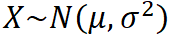
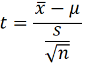

CFA Textbook
--------------------
Study Session 2 Quantitative Methods : Basic
Concepts
--------------------
Reading 10 Common Probability Distributions
--------------------
Summary
- A probability distribution specifies the probabilities of the
possible outcomes of a random variable.
- The two basic types of random variables are discrete random
variables and continuous random variables. Discrete random variables
take on at most a countable number of possible outcomes that we can
list as x1, x2, … In contrast, we cannot describe the possible
outcomes of a continuous random variable Z with a list z1, z2, …
because the outcome (z1 + z2)/2, not in the list, would always be
possible.
- The probability function specifies the probability that the
random variable will take on a specific value. The probability
function is denoted p(x) for a discrete random variable and f(x) for
a continuous random variable. For any probability function p(x), 0 ≤
p(x) ≤ 1, and the sum of p(x) over all values of X equals 1.
- The cumulative distribution function, denoted F(x) for both
continuous and discrete random variables, gives the probability that
the random variable is less than or equal to x.
- The discrete uniform and the continuous uniform distributions
are the distributions of equally likely outcomes.
- The binomial random variable is defined as the number of
successes in n Bernoulli trials, where the probability of success, p,
is constant for all trials and the trials are independent. A
Bernoulli trial is an experiment with two outcomes, which can
represent success or failure, an up move or a down move, or another
binary (two-fold) outcome.
- A binomial random variable has an expected value or mean
equal to np and variance equal to np(1 − p).
- A binomial tree is the graphical representation of a model of
asset price dynamics in which, at each period, the asset moves up
with probability p or down with probability (1 − p). The binomial
tree is a flexible method for modeling asset price movement and is
widely used in pricing options.
- The normal distribution is a continuous symmetric probability
distribution that is completely described by two parameters: its
mean, μ, and its variance, σ2.
- A univariate distribution specifies the probabilities for a
single random variable. A multivariate distribution specifies the
probabilities for a group of related random variables.
- To specify the normal distribution for a portfolio when its
component securities are normally distributed, we need the means,
standard deviations, and all the distinct pairwise correlations of
the securities. When we have those statistics, we have also specified
a multivariate normal distribution for the securities.
- For a normal random variable, approximately 68 percent of all
possible outcomes are within a one standard deviation interval about
the mean, approximately 95 percent are within a two standard
deviation interval about the mean, and approximately 99 percent are
within a three standard deviation interval about the mean.
- A normal random variable, X, is standardized using the
expression Z = (X − μ)/σ, where μ and σ are the mean and standard
deviation of X. Generally, we use the sample mean X as an estimate of μ and
the sample standard deviation s as an estimate of σ in this
expression.
- The standard normal random variable, denoted Z, has a mean
equal to 0 and variance equal to 1. All questions about any normal
random variable can be answered by referring to the cumulative
distribution function of a standard normal random variable, denoted
N(x) or N(z).
- Shortfall risk is the risk that portfolio value will fall
below some minimum acceptable level over some time horizon.
- Roy’s safety-first criterion, addressing shortfall risk,
asserts that the optimal portfolio is the one that minimizes the
probability that portfolio return falls below a threshold level.
According to Roy’s safety-first criterion, if returns are normally
distributed, the safety-first optimal portfolio P is the one that
maximizes the quantity [E(RP) − RL]/σP,
where RL is the minimum acceptable level of return.
- A random variable follows a lognormal distribution if the
natural logarithm of the random variable is normally distributed. The
lognormal distribution is defined in terms of the mean and variance
of its associated normal distribution. The lognormal distribution is
bounded below by 0 and skewed to the right (it has a long right
tail).
- The lognormal distribution is frequently used to model the
probability distribution of asset prices because it is bounded below
by zero.
- Continuous compounding views time as essentially continuous
or unbroken; discrete compounding views time as advancing in discrete
finite intervals.
- The continuously compounded return associated with a holding
period is the natural log of 1 plus the holding period return, or
equivalently, the natural log of ending price over beginning price.
- If continuously compounded returns are normally distributed,
asset prices are lognormally distributed. This relationship is used
to move back and forth between the distributions for return and
price. Because of the central limit theorem, continuously compounded
returns need not be normally distributed for asset prices to be
reasonably well described by a lognormal distribution.
- Monte Carlo simulation involves the use of a computer to
represent the operation of a complex financial system. A
characteristic feature of Monte Carlo simulation is the generation of
a large number of random samples from specified probability
distribution(s) to represent the operation of risk in the system.
Monte Carlo simulation is used in planning, in financial risk
management, and in valuing complex securities. Monte Carlo simulation
is a complement to analytical methods but provides only statistical
estimates, not exact results.
- Historical simulation is an established alternative to Monte
Carlo simulation that in one implementation involves repeated
sampling from a historical data series. Historical simulation is
grounded in actual data but can reflect only risks represented in the
sample historical data. Compared with Monte Carlo simulation,
historical simulation does not lend itself to “what if” analyses.
中文手册整理
- 离散分布
- 离散均匀分布（discrete uniform distribution）
- 二项分布（binomial distribution）
- 伯努利随机变量 Bernoulli random variable（零一分布），期望p，方差p(1-p)
- 二项随机变量（n次伯努利随机），期望np，方差np(1-p)
- 连续分布
- 连续均匀分布（continuous uniform distribution）
- 正态分布，normal distribution
- 正态分布可以由均值和方差完全描述 正态随机变量经线性组合得到的新随机变量仍然正态
- 正态分布是对称分布，偏度为零，超额峰度为0
- 正态随机变量经线性组合得到的新随机变量仍然正态
- 置信区间（confidence interval）
- 68% ~ [X-s,X+s]
- 90% ~ [X-1.65s,X+1.65s]
- 95% ~ [X-1.96s,X+1.96s]
- 99% ~ [X-2.58s,X+2.58s]
- 标准正态分布 standard normal distribution，X ~ N(0,1)
- E(aX+b) = aE(X)+b
- Var(aX+b) = a²×Var(X)
- 超亏风险和罗伊第一安全比率（SFR）
- 如果收益率服从正态分布，SFR就等于(X-u)/s，变相等于置信区间
- 当SFR的利率等于无风险利率时，SFR就是夏普比率
- 计算步骤
- 计算每个投资组合的SFR
- 选择最高的投资组合
- 对数正态分布
- 如果X的自然对数服从正态分布，那么X服从对数正态分布
- 对数正态分布取值范围大于零
- 对数正态分布是右偏的
- t分布
- 峰度小于正态分布
- 参数称为自由度，每个自由度对应一个t分布
- 当自由度n-1增加时，t分布逼进正态分布
- 离散复利收益和连续复利收益
- r=ln(1+R)，其中，r是连续复利收益率，R是离散复利收益率
- 连续复利收益的好处是，多期连续复利收益率等于单期连续复利收益的和
- 计算
- 给定持有期收益HPR，计算连续复利收益率
- r=ln(期末价格/期初价格)
- 跟踪误差（tracking error = total return - benchmark return）
- 蒙特卡罗模拟和历史模拟
- what if的问题 - 蒙特卡罗模拟的优势
- 真实分析的结果 - 历史模拟的优势
--------------------